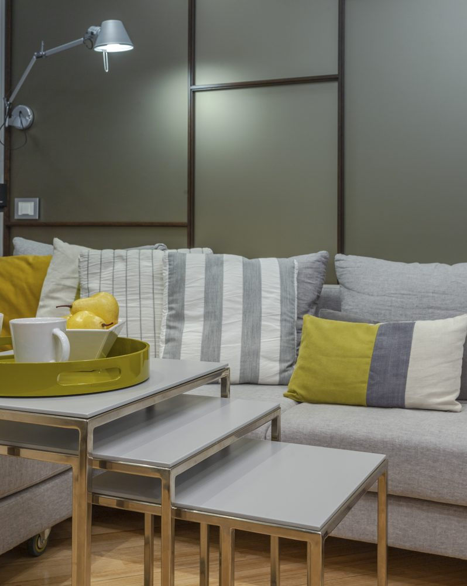
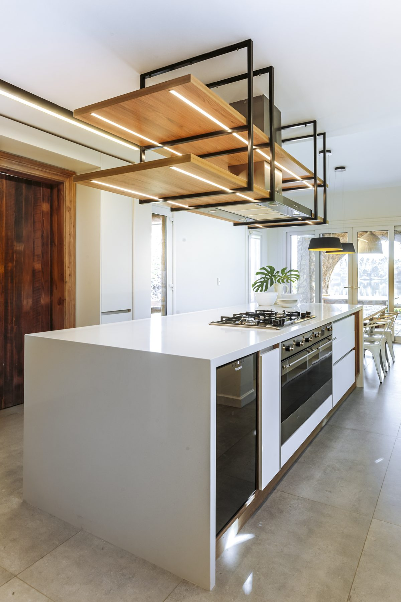

Arquitectura e interiorismo, de principio a fin.
Proyectos integrales de vivienda: reformas, interiorismo, mobiliario a medida y entrega llave en mano.
- 30 añosde trayectoria
- Más de 100proyectos
- Casa FOA2006, 2009 y 2010
Gutman Lehrer Arquitectas es un estudio de arquitectura e interiorismo residencial fundado en Buenos Aires en 1996.
Dirigido por las arquitectas Giselle Gutman y Mariana Lehrer, el estudio desarrolla cada vivienda en su totalidad: el proyecto, la obra, el mobiliario y cada objeto que la completa.
Proyectos


- Duplex en PalermoReforma integral
- Piso en Bajo BelgranoInteriorismo integral
- Piso OllerosRemodelación y arquitectura interior
Servicios
Reforma integral
La transformación completa de una vivienda existente, del proyecto a la dirección de obra.
Interiorismo en obra nueva
Interiores, iluminación y equipamiento definidos desde el inicio de la construcción.
Llave en mano
La vivienda entregada completa y lista para habitar.
Mobiliario a medida
Muebles y carpinterías diseñados por el estudio para cada espacio.
Un estudio dirigido por sus socias
Giselle Gutman y Mariana Lehrer comparten una misma manera de entender la arquitectura. Cada proyecto pasa por ellas: participan en el diseño, toman las decisiones clave junto a cada cliente y supervisan la obra hasta la entrega.
Conocer el estudioCada proyecto empieza con una conversación.
El estudio desarrolla proyectos integrales de vivienda en Buenos Aires, en otras ciudades del país y en el exterior.